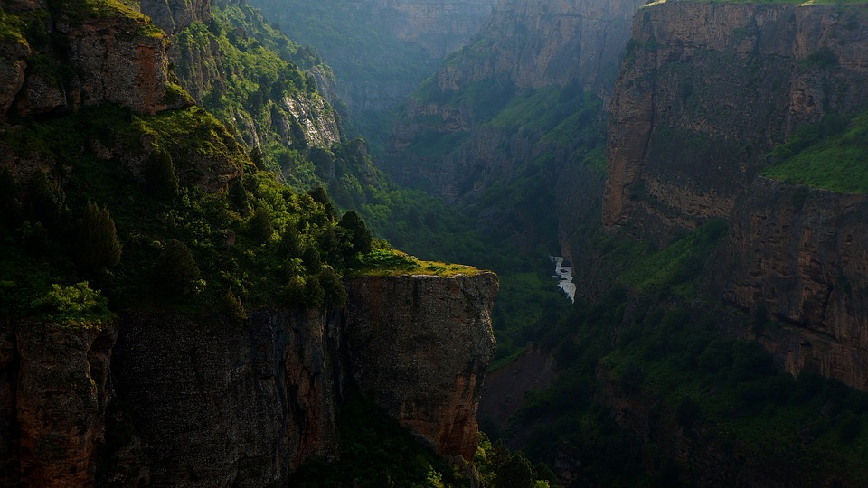

Latest Research
Now in its third year, the NatureNet Science Fellows Program - in partnership with leading research universities - has awarded two-year fellowships to 24 promising early career scientists.
The Science for Nature and People Partnership (SNAPP) delivers evidence-based, scalable solutions to global challenges at the intersection of nature conservation, sustainable development, and human well-being.